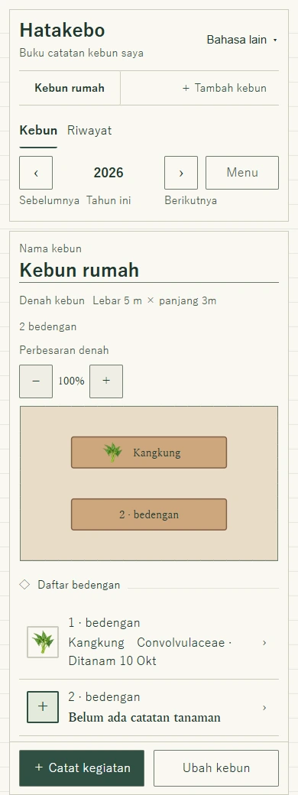
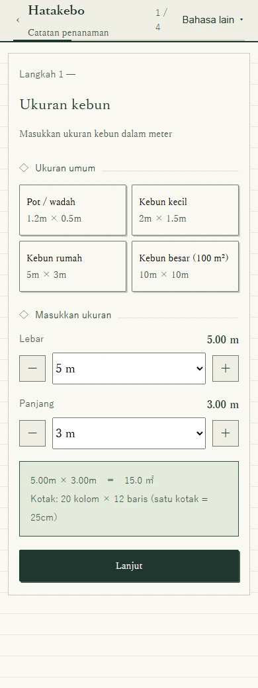
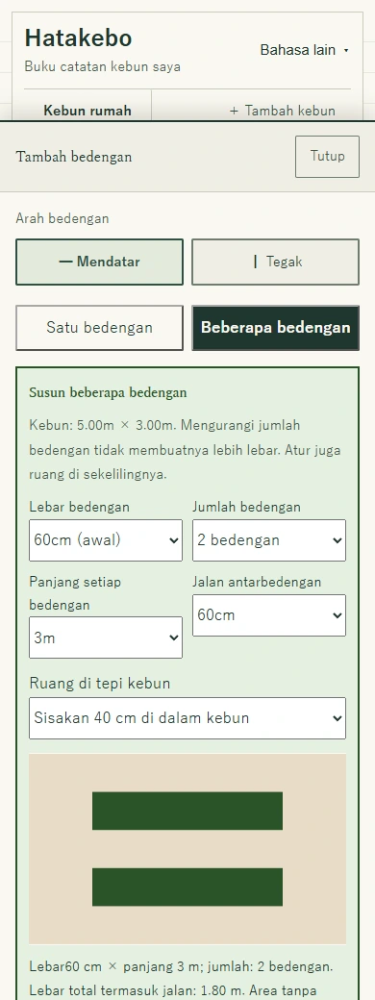
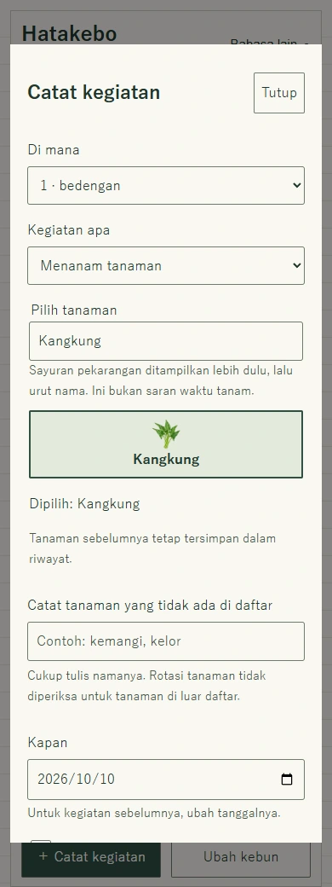
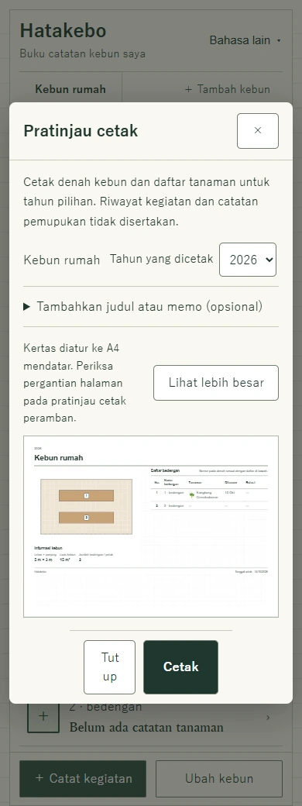
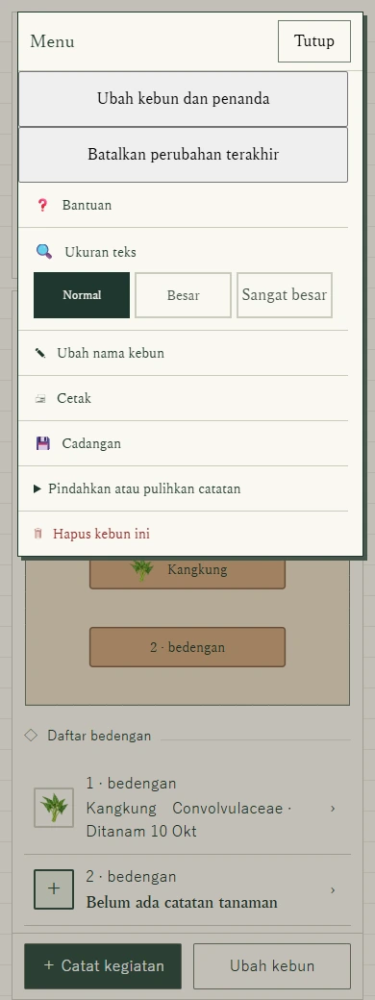

Kebun pertama Anda · Panduan bergambar
Cara membuat denah kebun sayur di lahan kecil
Contoh kebun 5 × 3 meter, dengan dua bedengan, jalan, dan denah yang bisa dicetak.
Tidak perlu mengisi semuanya sekaligus. Panduan ini menemani Anda dari buku catatan kosong hingga dua bedengan, dengan kangkung di salah satunya. Tombolnya sama di ponsel dan komputer—tidak perlu menyeret.
Inilah contoh yang akan dibuat
Kebun 5 × 3 meter bernama Kebun rumah, dengan dua bedengan mendatar. Bedengan pertama ditanami kangkung, sedangkan yang kedua dibiarkan kosong. Ukuran, tanaman, dan tanggal hanya contoh penggunaan aplikasi, bukan saran jarak atau waktu tanam.
Buka Hatakebo di tab baruBiarkan panduan ini terbuka sambil mencoba langkahnya.

Sebelum mulai
Ukur lebar dan panjang petak yang dapat Anda gunakan. Jangan masukkan jalan bersama sebagai bagian kebun. Sisakan ruang untuk berjalan dan menjangkau tanaman; ikuti aturan pengelola bila kebun Anda berada di lahan bersama.
Langkah 1
Atur ukuran dan nama kebun
- Buka Hatakebo dan pilih Buat kebun.
- Atur Lebar menjadi 5 m dan Panjang menjadi 3 m, lalu pilih Lanjut. Untuk kebun Anda sendiri, gunakan hasil pengukuran.
- Pada layar bentuk kebun, biarkan persegi panjang untuk contoh ini. Jika bentuknya tidak beraturan, ketuk kotak yang tidak dipakai. Pilih Lanjut.
- Tambahkan penanda sekitar bila perlu, atau langsung pilih Lanjut.
- Beri nama Kebun rumah, pilih Buat kebun ini, lalu Buka kebun saya. Jika panduan singkat muncul, Anda boleh mengikutinya atau memilih Lewati.

Langkah 2
Sisakan ruang untuk bedengan dan jalan
- Di kebun yang belum memiliki bedengan, pilih ＋ Tambah bedengan.
- Pilih Mendatar, lalu Beberapa bedengan.
- Atur ukuran berikut dan periksa pratinjau.
- Gulir ke bawah, lalu pilih Buat 2 bedengan dengan susunan ini. Jika masih berada dalam mode ubah, pilih Selesai mengubah.
- Lebar bedengan
- 60 cm
- Jumlah bedengan
- 2
- Panjang setiap bedengan
- 3 m
- Jalan antarbedengan
- 60 cm
- Ruang di tepi kebun
- Sisakan 40 cm di dalam kebun
Dua bedengan selebar 60 cm dan satu jalan 60 cm memerlukan 1,8 m. Ditambah ruang tepi masing-masing 40 cm, totalnya 2,6 m dan muat dalam sisi 3 m. Pada arah lainnya, panjang 3 m ditambah dua tepi 40 cm menjadi 3,8 m dan muat dalam sisi 5 m.

Langkah 3
Catat tanaman yang sudah ditanam
- Pilih ＋ Catat kegiatan. Pada Di mana, pilih bedengan pertama, yang ditampilkan sebagai 1 · bedengan pada contoh.
- Pada Kegiatan apa, pilih Menanam tanaman.
- Cari Kangkung, lalu pilih gambarnya. Anda juga dapat memulai dari bedengan pada denah atau daftar.
- Periksa Kapan. Tanggal awal adalah hari ini; ubah jika penanaman dilakukan sebelumnya.
- Gulir ke bawah dan pilih Simpan catatan. Kangkung kini muncul pada denah. Bedengan kedua boleh tetap kosong.
Urutan tanaman membantu pencarian, bukan menentukan waktu tanam. Untuk kompos, pupuk, pupuk hijau, atau catatan lain, kembali ke Catat kegiatan dan pilih kegiatannya. Mencatat tanaman berikutnya pada bedengan yang sama tetap menyimpan tanaman sebelumnya dalam riwayat.

Langkah 4
Bawa salinan denah ke kebun
Pilih Hatakebo Simple untuk denah dan daftar tanaman A4 mendatar, atau Hatakebo Diary untuk kartu catatan tanaman dan catatan tahunan per bedengan dalam A4 tegak. Keduanya memiliki garis kotak-kotak tipis. Pilih warna atau hitam putih pada pengaturan cetak. Judul dan memo bersifat opsional.
Simple memuat denah, daftar tanaman, dan petunjuk rotasi untuk tahun pilihan, tanpa riwayat kegiatan. Diary memuat catatan penanaman dan kegiatan pada tahun pilihan; catatan bersama seperti pupuk dan memo ditampilkan pada setiap bedengan. Diary tidak menyertakan pemeriksaan rotasi. Catatan panjang berlanjut ke halaman berikutnya.
- Pilih Menu → Cetak.
- Periksa nama kebun, tahun, denah, dan daftar bedengan.
- Pilih Cetak di bagian bawah. Pada dialog peramban atau perangkat, pilih printer—atau Simpan sebagai PDF jika tersedia.
Denah disesuaikan dengan kertas, bukan dicetak sebesar lahan sebenarnya. Ukuran dan luas dicantumkan di samping atau bawah denah.

Langkah 5
Simpan cadangan dan bersiap tanpa internet
- Pilih Menu → Cadangan dan periksa bahwa berkas sudah diunduh. Simpan salinan di perangkat atau media lain.
- Untuk berpindah perangkat, buka Pindahkan atau pulihkan catatan → Impor cadangan di perangkat tujuan. Impor mengganti catatan yang sudah ada; cadangkan terlebih dahulu bila masih diperlukan.
- Sebelum berangkat, buka aplikasi bahasa Indonesia dengan internet dan tunggu Siap digunakan tanpa internet. Setelah itu, Anda dapat membuka kembali dan mencatat pada perangkat serta peramban yang sama tanpa sinyal.
Catatan tersimpan di peramban ini, tanpa salinan di server Hatakebo atau sinkronisasi otomatis antarperangkat. Jangan menghapus data situs. Hasil cetak dan PDF adalah salinan untuk dibaca, bukan cadangan yang dapat diimpor.

Pertanyaan tentang denah kebun sayur
Bisakah membuat dan mencetak denah tanpa akun?
Bisa. Denah, catatan tanaman, dan cetak tersedia gratis di peramban. Catatan tersimpan di peramban Anda. Unduh cadangan untuk menyimpan salinan terpisah.
Bagaimana menghitung ruang untuk bedengan dan jalan?
Pada contoh ini, dua bedengan selebar 60 cm dan satu jalan selebar 60 cm membutuhkan 1,8 m. Dengan ruang tepi 40 cm di kedua sisi, totalnya 2,6 m dan muat dalam kedalaman 3 m. Sesuaikan jalan dengan kebutuhan Anda dan alat kebun.
Apakah aplikasi menentukan jarak atau waktu tanam?
Tidak. Denah menunjukkan bedengan dan tanaman yang dicatat, bukan perhitungan jarak setiap tanaman. Gunakan petunjuk benih dan saran setempat untuk menentukan jarak serta waktu tanam.